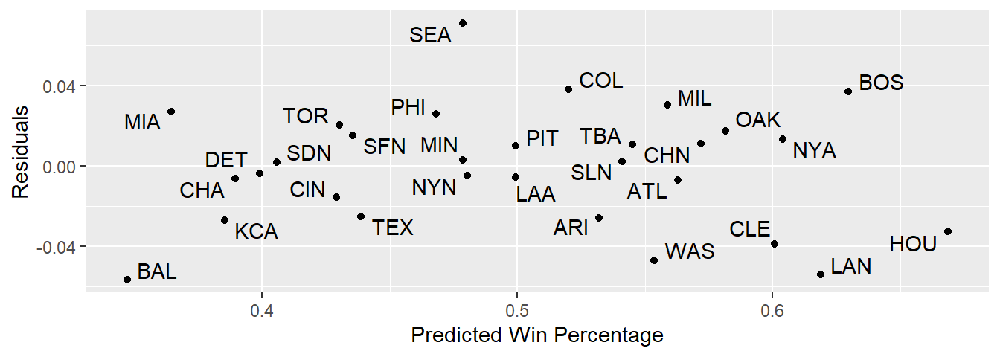
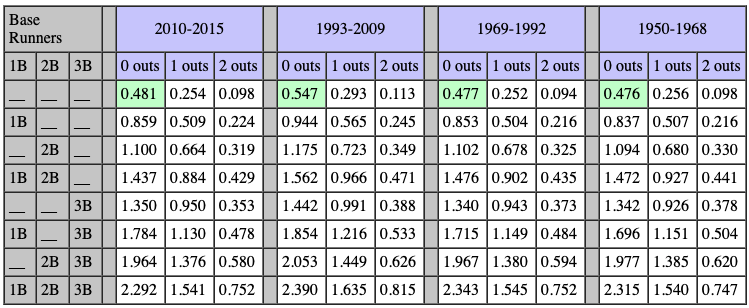
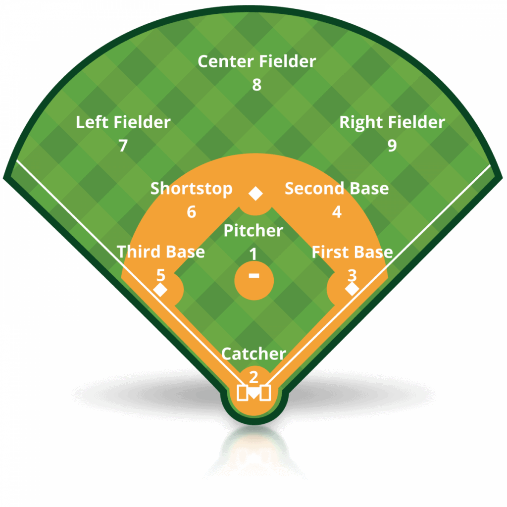

library(tidyverse)
library(Lahman)
library(knitr)
library(ggrepel)
library(broom)MA388 Sabermetrics: Lesson 9
Value of Plays - Run Expectancy Matrix
Review
Last lesson, we discussed the following three models:
\[\begin{align} Wpct &= \beta_0 + \beta_1 RD + \epsilon \\ Wpct &= \frac{R^2}{R^2 + RA^2} + \epsilon \\ Wpct &= \frac{R^k}{R^k + RA^k} + \epsilon \end{align}\]
Determine the value of \(k\) in the third model for the 2018 season.
Calculate the predicted wins for each team in 2018 and plot the residuals vs. the predicted values.

Value of Plays
Using the 10-runs-per-win rule of thumb (or more precise estimates using the other models), we now have a nice way of converting runs to wins. This leads to our next obvious question – how do we score runs? Simply put, players make plays, and sometimes those plays lead to runs. It’s time to assess how many runs players and plays are worth.
Run Expectancy Matrix
* The first step is to calculate the run expectancy matrix. The run expectancy matrix tells us the average number of runs scored in the remainder of an inning for each state (runner/out combination) of an inning.
The state of the game consists of four digits. The first three digits indicate the location of runners on base. The last digit indicates the number of outs.
Examples:
“000 0” - no runners on base; no outs
“111 2” - bases loaded; two outs
“010 1” - runner on second base; one out

How do we interpret the values in the matrix?
Do you see any trends over time?
We are looking at run expectancy matrices. There is another type of matrix called a run probability matrix. Explain how they differ.
Run Expectancy Matrix from Retrosheet Data
Typically, we use Retrosheet play-by-play data to calculate the run expectancy matrix. Below, we will calculate it for 2011 using the code from our textbook.
# Import Retrosheet play-by-play data from our textbook site.
site = "https://raw.githubusercontent.com/maxtoki/baseball_R/"
fields <- read_csv(file = paste(site, "master/data/fields.csv", sep =""))
retro2011 <- read_csv(file = paste(site, "master/data/all2011.csv", sep = ""),
col_names = pull(fields, Header),
na = character())
colnames(retro2011) <- tolower(colnames(retro2011))This data frame contains one line for every play in the 2011 season. There are approximately 200,000 lines in this data set.
retro2011 |>
select(game_id, away_team_id, inn_ct, outs_ct,
bat_id, pit_id, event_cd) |>
head(10) |>
kable()| game_id | away_team_id | inn_ct | outs_ct | bat_id | pit_id | event_cd |
|---|---|---|---|---|---|---|
| ANA201104080 | TOR | 1 | 0 | davir003 | sante001 | 2 |
| ANA201104080 | TOR | 1 | 1 | nix-j001 | sante001 | 2 |
| ANA201104080 | TOR | 1 | 2 | bautj002 | sante001 | 3 |
| ANA201104080 | TOR | 1 | 0 | iztum001 | drabk001 | 14 |
| ANA201104080 | TOR | 1 | 0 | kendh001 | drabk001 | 3 |
| ANA201104080 | TOR | 1 | 1 | abreb001 | drabk001 | 6 |
| ANA201104080 | TOR | 1 | 2 | abreb001 | drabk001 | 14 |
| ANA201104080 | TOR | 1 | 2 | huntt001 | drabk001 | 20 |
| ANA201104080 | TOR | 1 | 2 | wellv001 | drabk001 | 2 |
| ANA201104080 | TOR | 2 | 0 | linda001 | sante001 | 2 |
To understand what happened in this game, we’ll need to know what all the event codes are for various baseball outcomes described by the event_cd field.

If we further consider the event_tx and pitch_seq_tx fields, we can more comprehensively reconstruct each at-bat. Let’s try to describe what happened in the first inning of this game. We’ll need to know the position numbers to interpret the event text strings.

retro2011 |>
select(inn_ct, outs_ct,
bat_id, pit_id, pitch_seq_tx, event_tx) |>
head(10) |>
kable()| inn_ct | outs_ct | bat_id | pit_id | pitch_seq_tx | event_tx |
|---|---|---|---|---|---|
| 1 | 0 | davir003 | sante001 | FBSX | 9/F |
| 1 | 1 | nix-j001 | sante001 | X | 9/F |
| 1 | 2 | bautj002 | sante001 | CBCS | K |
| 1 | 0 | iztum001 | drabk001 | CBBBB | W |
| 1 | 0 | kendh001 | drabk001 | BCSBS | K |
| 1 | 1 | abreb001 | drabk001 | CBB1>S | CS2(26) |
| 1 | 2 | abreb001 | drabk001 | CBB1>S.FBFB | W |
| 1 | 2 | huntt001 | drabk001 | CCX | S9/L.1-H(E9/TH)(UR)(NR);B-3 |
| 1 | 2 | wellv001 | drabk001 | BX | 63/G |
| 2 | 0 | linda001 | sante001 | CBBFX | 3/L- |
Calculate the Run Expectancy Matrix
The textbook provides the code below to generate the run expectancy matrix.
retro2011 <- retro2011 |>
mutate(runs_before = away_score_ct + home_score_ct,
half_inning = paste(game_id, inn_ct, bat_home_id),
runs_scored =
(bat_dest_id > 3) + (run1_dest_id > 3) +
(run2_dest_id > 3) + (run3_dest_id > 3))
half_innings <- retro2011 |>
group_by(half_inning) |>
summarize(outs_inning = sum(event_outs_ct),
runs_inning = sum(runs_scored),
runs_start = first(runs_before),
max_runs = runs_inning + runs_start)
retro2011 <- retro2011 |>
inner_join(half_innings, by = "half_inning") |>
mutate(runs_roi = max_runs - runs_before)
retro2011 <- retro2011 |>
mutate(bases =
paste(ifelse(base1_run_id > '',1,0),
ifelse(base2_run_id > '',1,0),
ifelse(base3_run_id > '',1,0), sep = ""),
state = paste(bases, outs_ct))
retro2011 <- retro2011 |>
mutate(is_runner1 =
as.numeric(run1_dest_id==1 | bat_dest_id == 1),
is_runner2 =
as.numeric(run1_dest_id == 2 | run2_dest_id == 2 |
bat_dest_id == 2),
is_runner3 =
as.numeric(run1_dest_id == 3 | run2_dest_id == 3 |
run3_dest_id == 3 | bat_dest_id == 3),
new_outs = outs_ct + event_outs_ct,
new_bases = paste(is_runner1,is_runner2, is_runner3, sep = ""),
new_state = paste(new_bases, new_outs))retro2011 <- retro2011 |>
filter((state != new_state) | (runs_scored > 0))
retro2011_complete <- retro2011 |>
filter(outs_inning == 3)
erm_2011 <- retro2011_complete |>
group_by(bases, outs_ct) |> # same as grouping by state
summarize(mean_run_value = mean(runs_roi))
erm_2011_wide <- erm_2011 |>
pivot_wider(
names_from = outs_ct,
values_from = mean_run_value,
names_prefix = "Outs="
)
write_csv(erm_2011_wide, "erm_2011_wide.csv")
erm_2011_wide |> kable()| bases | Outs=0 | Outs=1 | Outs=2 |
|---|---|---|---|
| 000 | 0.4711649 | 0.2546956 | 0.0971845 |
| 001 | 1.4543568 | 0.9374359 | 0.3173913 |
| 010 | 1.0582804 | 0.6501976 | 0.3091673 |
| 011 | 1.9304897 | 1.3388641 | 0.5407407 |
| 100 | 0.8350992 | 0.4960492 | 0.2179536 |
| 101 | 1.7526998 | 1.1496169 | 0.4882597 |
| 110 | 1.4144549 | 0.8739176 | 0.4222569 |
| 111 | 2.1718266 | 1.4745146 | 0.7610094 |
Now we use this expected run table to determine the value of every event.
retro2011 <- retro2011 |>
left_join(erm_2011, join_by("bases", "outs_ct")) |>
rename(rv_start = mean_run_value) |>
left_join(
erm_2011,
join_by(new_bases == bases, new_outs == outs_ct)
) |>
rename(rv_end = mean_run_value) |>
replace_na(list(rv_end = 0)) |>
mutate(run_value = rv_end - rv_start + runs_scored)Note the code above also adds some very useful columns to the play-by-play data related to the state and run expectancy at the start and end of each play.
retro2011 |>
select(bat_id, event_cd, state, rv_start,
new_state, rv_end, runs_scored, run_value) |>
head(10) |>
kable(digits = 3)| bat_id | event_cd | state | rv_start | new_state | rv_end | runs_scored | run_value |
|---|---|---|---|---|---|---|---|
| davir003 | 2 | 000 0 | 0.471 | 000 1 | 0.255 | 0 | -0.216 |
| nix-j001 | 2 | 000 1 | 0.255 | 000 2 | 0.097 | 0 | -0.158 |
| bautj002 | 3 | 000 2 | 0.097 | 000 3 | 0.000 | 0 | -0.097 |
| iztum001 | 14 | 000 0 | 0.471 | 100 0 | 0.835 | 0 | 0.364 |
| kendh001 | 3 | 100 0 | 0.835 | 100 1 | 0.496 | 0 | -0.339 |
| abreb001 | 6 | 100 1 | 0.496 | 000 2 | 0.097 | 0 | -0.399 |
| abreb001 | 14 | 000 2 | 0.097 | 100 2 | 0.218 | 0 | 0.121 |
| huntt001 | 20 | 100 2 | 0.218 | 001 2 | 0.317 | 1 | 1.099 |
| wellv001 | 2 | 001 2 | 0.317 | 001 3 | 0.000 | 0 | -0.317 |
| linda001 | 2 | 000 0 | 0.471 | 000 1 | 0.255 | 0 | -0.216 |
library(baseballr) #the appendix does not tell you that you need this.
retro_data<-retrosheet_data(years=2022)
retro2022 <- retro_data |>
pluck("2022") |>
pluck("events")
roster2022 <- retro_data |>
pluck("2022") |>
pluck("rosters")
roster2022_clean<-roster2022 |>
select(player_id,last_name,first_name) |>
rename(bat_id=player_id) |>
distinct()
stats<-retro2022 |> #I split the code chunk so I don't have to do the slow step every time I run it
select(bat_id,event_cd,bat_home_id) |> #grab only the columns I want
filter(event_cd>=20|event_cd==2|event_cd==3) |> #events >= 20 are hits, 2+3 are out/strikeout
group_by(bat_id,bat_home_id) |>
mutate(
hit=if_else(event_cd>=20,1,0), #if play event was hit make it 1 if not 0
ab=1, #all of these are ABs, making them 1 to sum later
home_away=if_else(bat_home_id==1,"Home","Away"))
player_stats<-stats |>
group_by(bat_id,home_away) |>
summarize(AB=sum(ab),H=sum(hit),AVG=H/AB) |>
filter(AB>=100) #filter out players with <100 ABs
player_home_v_away<-player_stats |>
select(bat_id,home_away,AVG) |>
pivot_wider(id_cols = bat_id,
names_from = home_away,
values_from=AVG,
)
roster2022 |> count(player_id) |> arrange(-n)# A tibble: 1,495 × 2
player_id n
<chr> <int>
1 chany001 4
2 fordm002 4
3 abrea001 3
4 banda001 3
5 canor001 3
6 chavj001 3
7 duggs001 3
8 fairs001 3
9 gonzc002 3
10 keucd001 3
# ℹ 1,485 more rowsplayer_home_v_away<-player_home_v_away |>
left_join(roster2022_clean,by="bat_id")
player_home_v_away |>
mutate(Difference=abs(Home-Away)) |>
arrange(Difference) |>
head(10) |>
select(last_name,first_name,Difference)# A tibble: 10 × 4
# Groups: bat_id [10]
bat_id last_name first_name Difference
<chr> <chr> <chr> <dbl>
1 darnt001 d'Arnaud Travis 0
2 vierm001 Vierling Matt 0.000149
3 andre001 Andrus Elvis 0.000569
4 wendj002 Wendle Joey 0.000605
5 santc002 Santana Carlos 0.00110
6 merrw001 Merrifield Whit 0.00151
7 heimj001 Heim Jonah 0.00156
8 smitp002 Smith Pavin 0.00192
9 estrt001 Estrada Thairo 0.00196
10 rizza001 Rizzo Anthony 0.00208